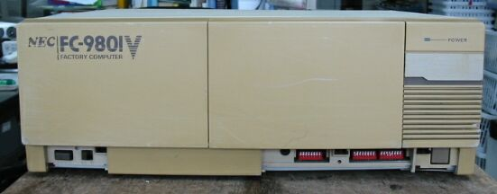
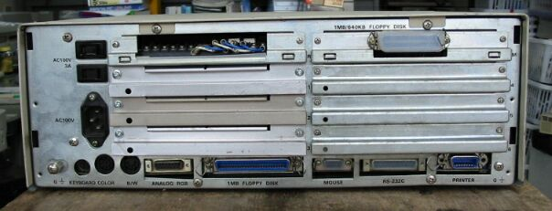

ファクトリーコンピュータFC-9801V
FC-9801Bの正面

FC-9801Vの裏面、拡張ボードがたくさん入ります。

FC-9801Vの主な仕様
型 名 ：FC-9801V
価 格 ：販売店見積
発表日 ：86/03
出荷日 ：86/03
CPUクロック ： V30 8M/10MHz切り替え
ROM ： N88-BASIC(86)及びモニタ96KB
標準RAM ： 384KB
最大ユーザーズメモリ ： 640KB
グラフィックVRAM容量 ： 192KB
グラフィックVRAM画素数： 640*400
グラフィックVRAM色数 ： 4096色中8色2画面
サウンドVRAM ：
テキストVRAM ： 12KB
拡張スロット数 ： 6
拡張スロット電源容量 + 5V ：0.5A
+12V ：0.06A
-12V ：0.07A
内蔵インタフェースコネクタ：1MFDDI/F 1M/640KBFDD両用I/F プリンタI/F
：RS-232CI/F マウスI/F B/WCRTI/F
：デジタルCRTI/F アナログCRTI/F
漢字 ：標準:第一オプション:第二、拡張
サウンド機能 ：オプション
カレンダ時計 ：μPD1990使用年サポートなし
ＶＣＣＩ適合 ：
使用条件 電圧 ：AC100V±10%-15%
周波数：50/60
温度 ：0〜50
湿度 ：20〜90%(結露なし)
消費電力 標準 (W) ：80
最大 (W) ：145
エネルギー消費効率 (W) ：80
外形寸法 本 体 (mm) (W)：420 (D)：345 (H)：150
重量 本体 (Kg) ：11.5
(2005/06/24 記)
変わった98のページに戻る